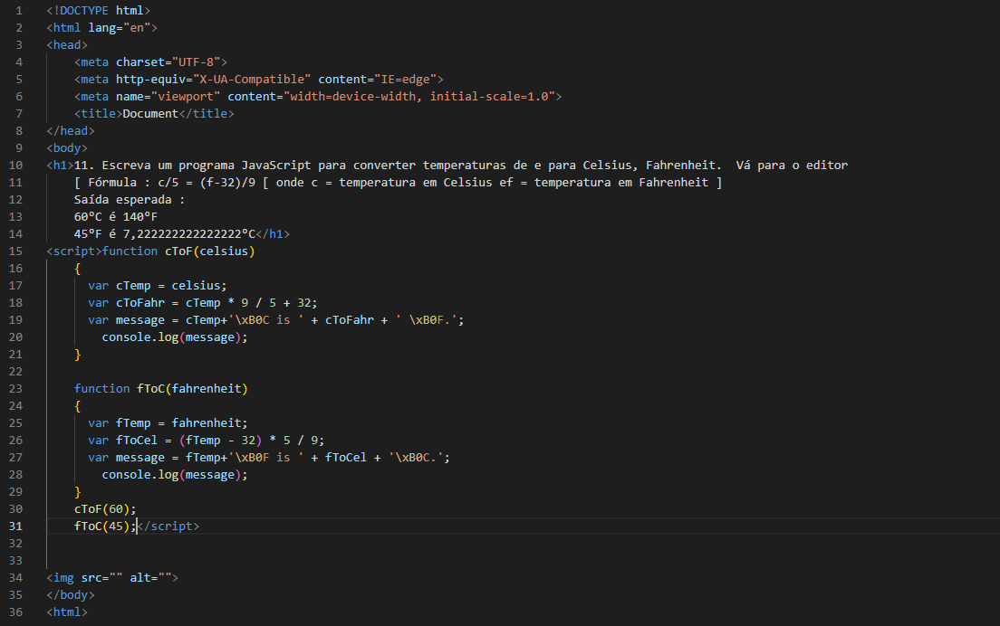

11. Escreva um programa JavaScript para converter temperaturas de e para Celsius, Fahrenheit. Vá para o editor
[ Fórmula : c/5 = (f-32)/9 [ onde c = temperatura em Celsius ef = temperatura em Fahrenheit ]
Saída esperada :
60°C é 140°F
45°F é 7,222222222222222°C
